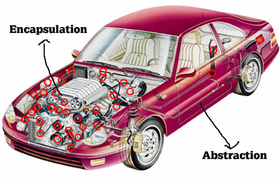
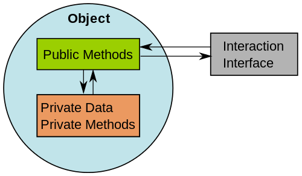
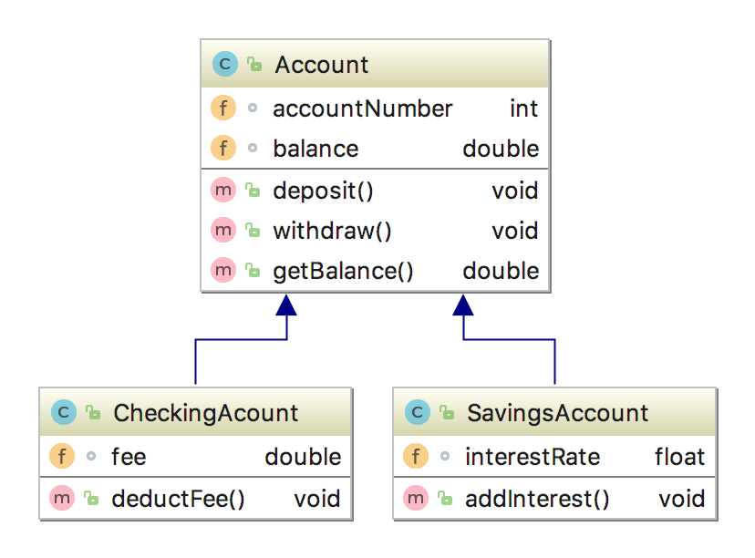
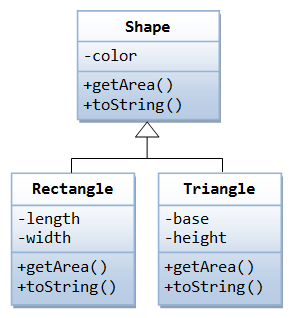
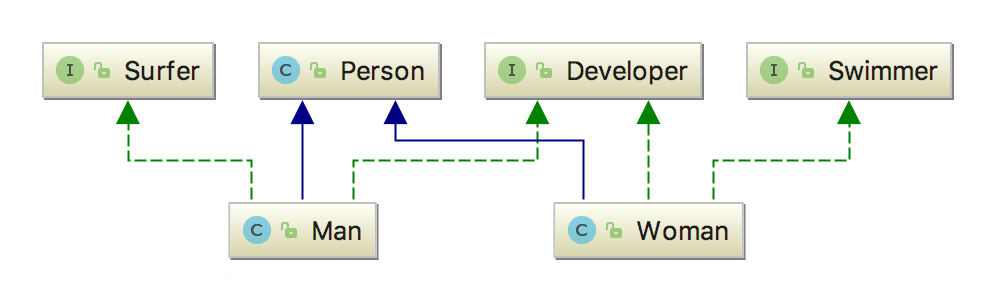
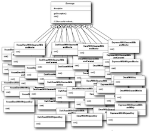
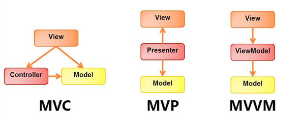

Many times it is complexity that motivates the change or introduction of new programming paradigms.
We still have machine code being executed by a CPU. Being shielded from complexity by abstraction, has the tradeoff of losing finer aspects of control over our code.
An approach to solving a problem, using a programming language.
The style with which the structure and elements of a programming language are built determine its paradigms.
| Imperative |
|---|
| Allow us stricter control over the operation. |
| Force us to specify how we want to perform an operation. |
| Declarative |
|---|
| Abstact more complexity. |
| Allow us to declare what operation we want to perform. |
| Code is easier to debug and maintain. |
I'm at the <A/C_> campus. Where's the restaurant?
A view of a problem that extracts the essential information relevant to a particular purpose and ignores the remainder of the information[IEEE, 1983]
It's a powerful technique for dealing with complexity
Unable to master a complex object, we choose to ignore its non-essential details, dealing instead with a generalized and idealized model
Encapsulation or equivalently information hiding refers to the practice of including within an object everything it needs, and furthermore doing this in such a way that no other object need ever be aware of this internal structure[Graham, 1991]
Encapsulation helps with the loose coupling between objects, resulting in more scalable, easier to maintain, software
Through Abstraction we identify the essential aspects of a system
With Encapsulation we expose to the user of the system a clear and well defined interface, hiding all the complex implementation details
Objects in a software program interact with other objects through their public interfaces

Define a relationship between classes where one
class
contains or owns another class
Aggregation or Composition define HAS-A relationships
Relationship between classes where derived (sub) classes inherit state and behaviour from base (super) classes
Allows reuse of existing code with little or no modification

Inheritance defines IS-A relationships
Both mechanisms allow for reusing existing classes
| Inheritance | Composition | |
|---|---|---|
| Relation | static (compile time) | dynamic (run time) |
| Encapsulation | breaks encapsulation | favours encapsulation |
| Coupling | high | low |
| Cohesion | low | high |
| Boilerplate | low | high |
Always favor composition over inheritance
Use inheritance only if there is a clear hierarchical relationship between classes
Inheritance gives us polymorphism, which etymologically means many forms and provides one of the most powerful programming techniques of the object-oriented paradigm
Instead of binding the method call to the actual code at compile time (static binding), the compiler will defer the decision on which method to call to runtime. This is known as dynamic or late binding

// References of the base class type can point to the type of the descendent class
Shape shape1 = new Rectangle();
Shape shape2 = new Triangle();
// Which methods will be called?
shape1.getArea();
shape2.getArea();
Java single inheritance severely cripples the benefits of polymorphism, but a restricted form of multiple inheritance is supported through interfaces, unleashing the full power of polymorphism
Designing object-oriented software is hard and designing reusable object-oriented software is even harder.
Design should be specific but also general enough for future problems and requirements. Avoid redesign, or at least minimize it.
Reusable and flexible designs are difficult if not
impossible
to get right the first time.
Yet, experienced object-oriented designers do make good designs.
They reuse solutions that have worked for them in the past
When they find a good solution, they use it again, and again...
Such experience is part of what makes them experts
Wouldn't it be great if this knowledge could be shared for novice developers?


A general repeatable solution to a commonly
occurring
problem in software design
A description or template to solve a problem that can be used in many different situations
A finished design that can be transformed directly into code
Some very simple OOP principles form the basis
of
almost every design pattern:
If some aspect of your code is changing or likely to change, it needs to be pulled out and separated from the rest
If a single requirement changes, it should only require us to change the related code in a single place
But if the code base is badly designed, the change will be difficult and have high risk of causing unexpected effects
Programming to an interface is saying
"I need
this functionality and I don't care where it comes
from"
Interfaces allow a class to use functionality
without depending on the implementing class directly
If you decide to use a different implementation, you
only
need to change the code where the concrete object is
instantiated
Inheritance is not bad per se and is a very powerful (and essential) tool in Object Oriented Design
However when not used properly it creates code that
is
inflexible, tightly coupled and hard to maintain
Polymorphic behaviour, code reuse and greater flexibility can be achieved through composition rather than inheritance
The "Gang of Four" divided the design patterns they documented into three fundamental groups:
Design patterns that abstract the instantiation process
They help make a system independent of how its objects are created, composed and represented
Examples include the Factory, Builder,
Prototype
or Singleton design patterns
Patterns concerned with how classes and objects
are
composed to form larger structures
Examples include the Decorator, Facade or Proxy design patterns
These patterns are all about how objects
communicate
with each other
Behavioral patterns are concerned with algorithms and the assignment of responsibilities between objects
Examples include the Strategy,
Command,
Template
or Observer design patterns
The creation logic for an object or family of
related objects
can quickly become complex
The user of such objects
has to be aware of
every concrete class
and its respective creation logic
If you need to remove or add new objects to the
family
or make changes to their creation
logic,
all users of such objects will require
modification!
Encapsulate all the object creation logic inside a method { Remember: Encapsulate what changes! }
This method is called the Factory Method and replaces the usage of the new operator for each implementation
The object user becomes unaware of concrete implementation or creation logic and can take advantage of polymorphism { Remember: Program to an interface, not an implementation! }
It's now possible to create new concrete implementations or modify creation logic without changing any code besides the factory itself
public interface Shape {
void draw();
}
public class Circle implements Shape {
@Override
public void draw() { System.out.println("Drawing a circle!"); }
}
public class Square implements Shape {
@Override
public void draw() { System.out.println("Drawing a square!"); }
}
This is our Shape interface, along with its
concrete implementations
public class ShapeFactory {
public Shape create(ShapeType type) {
switch(type) {
case CIRCLE:
return new Circle();
case SQUARE:
return new Square();
default:
return new Circle();
}
}
}
public enum ShapeType {
CIRCLE,
SQUARE
}
ShapeFactory is a class containing the factory
method
public class Main {
public static void main(String[] args) {
ShapeFactory shapeFactory = new ShapeFactory();
Shape s1 = shapeFactory.create(ShapeType.CIRCLE);
Shape s2 = shapeFactory.create(ShapeType.SQUARE);
s1.draw(); // "Drawing a circle!"
s2.draw(); // "Drawing a square!"
}
}
Again to do with the complexity of creation logic for an object or family of related objects
Composite objects can have a complex construction, with default and optional parameters in their constructor calls.
Creating different representations of said object can become cumbersome for the user.
Separate the construction of a complex object from its representation. { Remember: Encapsulate what changes! }
The algorithm for creating the object becomes independent and the same construction process can create different representations.
A Builder capable of representing the object is first configured according to the user's need. From it a complete complex object is created.
public class Cake {
private final double flour;
private final double sugar;
private final int eggs;
private final double chocolate;
private final double milk;
public Cake(Builder cakeBuilder) {
this.flour = cakeBuilder.getFlour();
this.sugar = cakeBuilder.getSugar();
this.eggs = cakeBuilder.getEggs();
this.chocolate = cakeBuilder.getChocolate();
this.milk = cakeBuilder.getMilk();
}
}
Notice that the Cake constructor takes a Builder as
parameter which is used to set the object's
properties.
public class Builder {
private double flour = 0d;
private double sugar = 0d;
private int eggs = 0;
private double chocolate = 0d;
private double milk = 0d;
public Cake build() {
return new Cake(this);
}
public Builder addFlour(double flour) {
this.flour = flour;
return this;
}
// other methods for each property
}
Methods which set the properties return the instance
of the Builder.
public class Main {
public static void main(String[] args) {
Builder madeleineBuilder = new Builder();
madeleineBuilder.addFlour(200)
.addSugar(150)
.addEggs(2);
Cake madeleine = madeleineBuilder.build();
}
}
Sometimes we want to add features to individual objects at runtime
Inheritance defines the object functionality at compile-time and shares it among all descendants
If multiple features need to be added, we would need
to
create classes for each possible feature
combination
Objects are wrapped by objects of the same type
(decorators),
which may add or change functionality
before/after
delegating to the wrapped object.
{ Remember: Favour composition over
inheritance! }
As they share the same type, it's possible to nest decorators recursively, allowing an unlimited number of added responsibilities
Imagine you own a car dealer
Every time you sell a car, you want to be able to
add some extras
You want to invoice your sale with the proper
description
and the final price of the car
You could, but how easily would this get out of control?
Considering only 4 accessories you would need
24
different classes to satisfy all possible
combinations
Ever heard about class explosion?
And we're not even addressing the problem of a change of price on one of the accessories!
1. Create your car interface
public interface Car {
String getAccessories();
int getPrice();
}
2. And a concrete class for a car with no extras whatsoever
public class BasicCar implements Car {
@Override
public String getAccessories() {
return "Basic Car";
}
@Override
public int getPrice() {
return 4000;
}
}
3. Create your abstract decorator (which implements car)
public abstract class CarDecorator implements Car {
private Car decoratedCar;
public CarDecorator(Car decoratedCar) {
this.decoratedCar = decoratedCar;
}
@Override
public String getAccessories() {
return decoratedCar.getAccessories();
}
@Override
public int getPrice() {
return decoratedCar.getPrice();
}
}
Have you noticed how your car has-a car?
4. Create your concrete decorators - Expandable Rooftop
public class ExpandableRooftop extends CarDecorator {
public ExpandableRooftop(Car decoratedCar) {
super(decoratedCar);
}
@Override
public String getAccessories() {
return decoratedCar.getAccessories() + " with Expandable Rooftop";
}
@Override
public int getPrice() {
return decoratedCar.getPrice() + 200;
}
}
4. Create your concrete decorators - Air Conditioner
public class AirConditioner extends CarDecorator {
public AirConditioner(Car decoratedCar) {
super(decoratedCar);
}
@Override
public String getAccessories() {
return decoratedCar.getAccessories() + " with Air Conditioner";
}
@Override
public int getPrice() {
return decoratedCar.getPrice() + 200;
}
}
5. Make a Sale - Test your decorator pattern
public class Main {
public static void main(String[] args) {
Car car = new AirConditioner(new ExpandableRooftop(new BasicCar()));
System.out.println("Accessories: " + car.getAccessories());
// "Accessories: Basic Car with Expandable Rooftop with Air Conditioner"
System.out.println("Price: " + car.getPrice());
// "Price: 4400"
}
}
You’ve got multiple algorithms to achieve the same functionality and they must be interchangeable at runtime
A single method is edited often in order to fulfill new requirements, normally leading to a lot of if/else clauses or switch statements, introducing complexity in your code
Create an interface that declares the behaviour
{ Remember: Program to the interface! }
Encapsulate each algorithm inside an implementing
class
{ Remember: Encapsulate what varies! }
All clients that need to perform these operations interchangeably should refer to the interface and not to a particular implementation
public interface Transport {
void goTo(String place);
}
public class Taxi implements Transport {
@Override
public void goTo(String place) {
System.out.println("Going to " + place + " by taxi!");
}
}
public class Bus implements Transport {
@Override
public void goTo(String place) {
System.out.println("Going to " + place + " by bus!");
}
}
This is our Transport interface, along with its
concrete implementations
public class Person {
private Transport transport;
public void goToWork() {
transport.goTo("work");
}
public void goHome() {
transport.goTo("home");
}
public void setTransport(Transport transport) {
this.transport = transport;
}
}
This is a class with a Transport as a field, which
may store different Transport implementations
public class Main {
public static void main(String[] args) {
Person person = new Person();
Transport taxi = new Taxi();
Transport bus = new Bus();
person.setTransport(taxi);
person.goToWork(); // "Going to work by taxi!"
person.setTransport(bus);
person.goToWork(); // "Going to work by bus!"
}
}
Apply relevant design patterns of your choice
Patterns occur at many levels
Design Patterns are at the level of several collaborating objects
Architectural Patterns are the largest in scope and cover the fundamental organization of the system, providing reusable solutions to common problems in software architecture
Software architecture pattern that divides a given software application into three interconnected parts, separating internal representation of data from the way data is presented to or accepted from the user
Multiple variations to the classic MVC pattern exist
They all build upon the idea to separate the data (model) from the specific presentation technology (view) and encapsulating the logic that hooks the two behind some sort of controller object
Refactor and improve existing code base by applying the MVC architectural pattern
Where should we place the business logic of our applications?
A cleaner and scalable approach is to extract business logic and data access code into a Service Layer
Using a Service Layer Pattern, the Controller must take request data and pass it into the Service layer
The service layer returns data for the Controller
to inject into a View for rendering
public interface CustomerService {
Customer get(Integer id);
List<Customer> list();
Set<Integer> listCustomerAccountIds(Integer id);
double getBalance(int customerId);
void add(Customer customer);
}
public interface AccountService {
void add(Account account);
void deposit(int id, double amount);
void withdraw(int id, double amount);
void transfer(int srcId, int dstId, double amount);
}
public interface AuthService {
boolean authenticate(Integer id);
Customer getAccessingCustomer();
}
Refactor and improve existing code by applying the service layer pattern